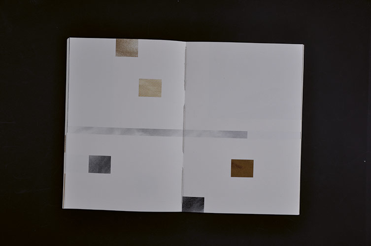
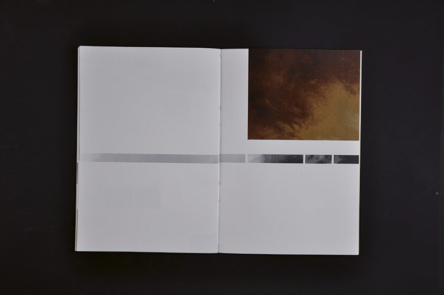
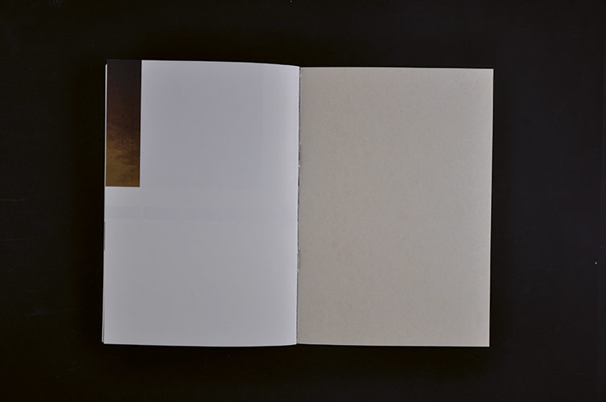
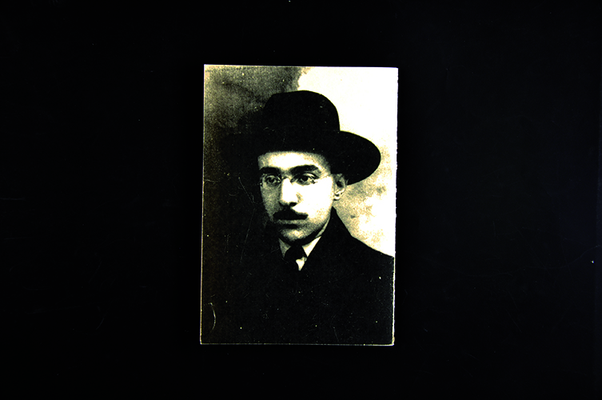
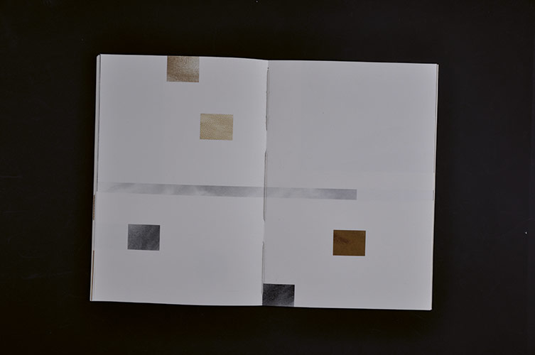
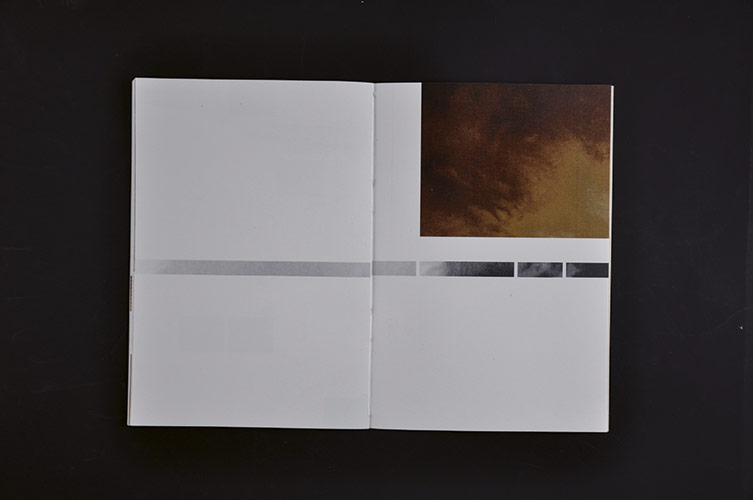
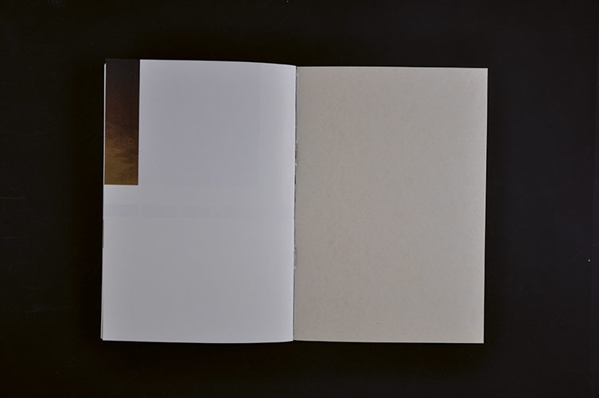
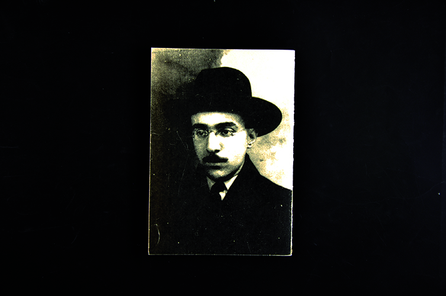

Édition
Nuages
Comment faire rentrer des nuages dans une grille ?
Concevoir une édition à visée poétique en se référant au « Livre de l’Intranquillité » de Fernando Pessoa, uniquement à partir de la grille de mise en page et d'images.
13,8 x 20 cm
32 pages
2012
 






